来源：https://q6m0ulsetk.feishu.cn/docx/LYmCdhsYMoAOhXxUvvjcqGfInIh
本文目录，部分篇章含有视频和图片，文字也较多，推荐电脑阅读
一、提升成功率:拓展账号矩阵，乘胜追击。
1.1 搬运号违规账号限流问题
二、关联账号，节省时间，及时止损
三、新账号先不注册店铺，先测号
四、关于挂车笔记流量问题
五、正确的理解挂车笔记小眼睛，不要流量焦虑
六、测品测素材阶段看数据调整运营策略(1)
八、测品测素材阶段看数据调整运营策略(2)
七、提高综合能力才能做好
九、关于做什么类目
十、一些问题答疑
不要死守一个账号，对抗概率最好的方式就是矩阵，全身心投入做一个号相当于梭哈，而全身心做几个号所拿到结果的概率会提升很多。
这个矩阵不是让你上来就矩阵，开始是0，复制还是0，矩阵逻辑在于：已经做出来1，再去复制到10~100，先好好做一个号，哪怕这个号没有做到爆单，先熟悉基本的项目操作流程，在去矩阵，在拓展不同类目和产品等，提升成功概率
我们做小红书店铺，本质我们是在做新媒体，号店一体，更多是在做账号，店铺只是一个载体，可以理解为只是用来付款的一个通道，做账号就是做内容，我们的订单都是靠内容驱动的
笔记爆了=爆单了（当然也有特殊的原因情况转化率差，通俗概括个大概意思）既然是新媒体那就存在概率性
首先讲下账号概率性：有一些账号先天基因就是比较差，例如a号发没几篇就爆了，b账号怎么打磨他就是没数据，这里也存在一些原因，可以排查出来一些可能性，但这些可能性存在不确定性，建议对于这种账号无需浪费时间，行就精细化运营，不行就淘汰，做过搬运项目矩阵的都懂这个道道，我们起了不少号，这个问题是成立的，但核心的真正原因去排查并揪出来，在解决太浪费时间了，另外有一些二手机之前违规过你可能不知道，重大违规关联也存在这个问题（做项目的应该懂）可以刷机等去排除这个问题，这里不细说，之前的手册讲过解决办法。
很多做项目的圈友应该能理解，拿我自身举例，我也做了不少项目，但基本项目一跑通流程，就开始矩阵，一个号一个号起，或a账号没什么起色就抓紧起b账号，放大概率，尽快拿结果，之前团队做抖音最高峰也起了有100多个账号，做过的闲鱼项目也有50多家店，到现在的小红书一共也起了36家店，最后筛出14家有潜力且能出数据的账号就精细化运营维护，同时也在一边在注销做不起来的账号，注销重新注册起新号
情况1：我们做搬运本身就是在对抗平台，混剪，去重，这些剪辑手法也是为了提高给平台判定搬运的风险，很多做小红书带货的账号包括我们自己，笔记爆了，基本都会裂变笔记，就是重复发或者修改修改在发，同质化严重没有哪个平台喜欢，基本上一篇笔记到达一个流量池就判定搬运违规，裂变的笔记也在推流，裂变的笔记进入下一个流量池到了机审或人工审核的阶段，或是爆的笔记给举报等等，违规就接二连三的蹦出来，导致账号权重不断的在降低，虽然正在爆单，但这个账号爆完基本就是废号了，养回来的时间精力还不如在起一个新号，有这个概率，当然也有应对的办法，就看怎么去运营做内容了，我们基本把这些号都当做一次性的，不会想着去养回来，爆完单凉了就凉了，提高内容原创度要做好，但尽可能避免出现这个问题，同时做好心理预期，有苗头的账号起来一点点着手准备新号或者一起做其他账号，a号凉了，精力放b账号上，我们一直在起号
情况2：还是搬运的问题，情况一是爆起来的情况，情况二是有一些账号也能出个几十单，但就是没什么爆发，笔记数据就是一般般，各种运营方向都调来调去就是没什么起色，整到最后账号没什么推荐流量了，绕了一大圈最后还是选择注销，切品或一直在换不同风格太浪费时间，这种具体要看账号有没有拉回来的可能，但建议精力不要全部放在这一个账号上
我们做的这个搬运本身就是在对抗平台的，当一个账号起来之后，不要去考虑这个账号的持续时间有多长，因为慢慢的它就会变得没有流量。（可以去看很多销量很高的账号，爆了后就没什么流量了，后面经过了漫长不断输出笔记，慢慢把账号又重新拉回来，这个过程我个人是不想去浪费的，我会去起新号）
我们在刷小红书对标的时候，可以看到近期出数据爆单的对标账号也非常多，近期有成功案例，这个概率就有50%了，在通过多账号测试，成功的概率就会不断提
之前分享的那篇文章，那个账号也是在几个账号中跑出来一个数据较好的，团队做了不少账号，爆款也是有部分运气在，但不管起哪个号都是不断的在优化迭代，围绕底层逻辑和方法论执行
A方案：开通企业店（个体工商店）一个企业店能关联3个账号，我们叫做一拖三（矩阵首先方案）
一张营业执照可以开三家店铺，一家店铺可以关联3个账号，等于一个店，4个号，三家店开满关联满，一共可以有12个号+一个个人店＝4家店14个号（办营业执照可以办全类目，在拓展类目上无需重新办营业执照）
一拖三：
就是可以关联在主体账号下挂主体账号商品的账号，关联的账号出单都计算在主体账号，关联的小号都是独立手机卡注册的，是独立账号，店铺最大化，这3个账号能随时地取消关联或注销，注销了在注册在关联，就是一个新账号，关联的账号需要实名，这个花点小钱即可解决，注册关联的小号的手机号我们都是用的注册卡，首选还是推荐实卡注册，如果你在做小红书建议开这种店，然后一拖三，如果个人店账号费了注销要等40多天，而个体店主体账号如果废了没关系，关联的子账号可以继续带货，也可以随时随地取消关联，注销了，这个手机号可以重新注册，重新实名，重新关联，节省时间，非常高效
关于怎么开通营业执照，个体店怎么开，小红书开店的一些问题可以看这篇文章
A方案可以灵活变通，也可以先开号先做号，不关联，号有数据立马关联到个体店主体名下，发带货笔记，时间充足可以多备这些账号同时在运营着
B方案：先开号不开店|测号|测品|测内容，一有数据立马实名开店（备选方案）
前面说了一个概率性问题，在实操中，我们会先不去开通店铺，会先发布几篇笔记测试下这个账号的情况，或就是先做号在做店，就是注册了账号正常做，但不开店，等账号出数据了在开店，这里涉及到一个问题就是有可能开了店铺，笔记爆了在挂链接，转化变的很差，或是出了几十单，但账号就是起不来，慢慢的这个账号就变成了废号，这种情况注销账号是最难受的，要等最后一笔订单结算结束，申请关店，要等待打底40+天的时间
注册了小红书账号先测试一下账号有没有问题！直接发笔记测试
正常的发笔记小眼睛在50-100之间！小眼睛在20以下，发了很多篇都是在20以下！说明你的账号有问题！这种直接注销第二天继续用这个手机号注册一个新的，继续测一下，合适了在去开通店铺，如果直接注册就开店号不行没出单还要等7天才能注销，如果有出单要等40天，非常麻烦
关于笔记流量，并不是挂车笔记会流量不好，而是“质量低”的挂车笔记会流量不好。
原因是：普通笔记会分发给全量的兴趣用户（泛流量），挂车笔记会分发给有购买意向的兴趣用户（精准流量）；
挂车笔记的流量分发会更精准曝光给有相关购买行为和意向的人群，
所以挂车笔记内容质量低，则阅读量（小眼睛）会比不挂商品链接时更低。
提升挂车笔记内容质量，将商品卖点放大，对求购人群更具吸引力，转化效率会大幅提升。
首先很多伙伴的反馈为什么我小眼睛只有100多，结合上一个点给展开讲解下小眼睛和标签的关联性，也可以判断
我们账号标签深浅问题
我们可以看到很多销量很高的账号，他们发布的笔记平均的播放量也都是100-几百，偶尔出个小爆文（灰豚可以看）
小红书基础播放是50，就相当于抖音的基础播放是500
小红书账号没有问题的情况下，发任何一条笔记，基础播放就是50
有时候是60、80、100、这个是在基础播放50的基础上，这个笔记做的稍微比同行好，系统又给你二次推流了，但
基础永远是50，账号还没有问题的前提下，如果50都没有，那就是内容问题！
如果是新号，可能不是素材或选品的问题，有可能新号发布笔记的频率过高过多，建议发布一篇笔记最少间隔半小时以上。笔记数量建议新号开始先发几篇不挂车的笔记，数量可以阶梯叠加2/4/6/8这样，后期平均一天5-8条即可，切记“勿高勿多”，发太多太频繁官方会判断你这个号是搬运号营销号，导致账号没有流量。
所以笔记100左右，超级正常，非常正常，不要流量焦虑！
如果你随便发一条笔记100左右，这叫打上了“一些”标签了（注意是一些）
如果你是偶尔，普遍是50偶尔100，那是这个100的笔记好，但权重还是50左右，
怎么样算打上标签，这里再延一下：
上面说了随便发一条笔记100左右，相当于打上标签了，但是偶尔发一条100左右，不算打上标签
100是100的标签
200是200的标签
500是500的标签
有些账号权重高，发一条1000，你发布的基础播放量越高打的标签越深，但这个没有具体的值去，越高越好，打的标签越深，标签越深，基础播放量越高
所以，其实只要高于基础播放50左右，就是打上标签了，只是深和浅的问题
换个逻辑讲，我们是上来带货变现的，我们要的流量是能转化订单的流量，就是上一个点说的（挂车笔记会分发给有购买意向的兴趣用户（精准流量））而不是泛流量（普通笔记会分发给全量的兴趣用户（泛流量））
小眼睛的数据只是非常表层的数据，做电商要看数据去制定的运营方案不单只是看一个维度
举个例子：一篇笔记的展现100有10个商品访客，10个商品访客转化1单，
这种情况我们可以增加我们笔记的量
例如十篇笔记平均一篇100展现十篇就有1000展现，1000展现100个商品访客转化10单，笔记量跟上，你的展现多，访客就会增加，出单概率就会大，很多人就发那1-2篇笔记就嗷嗷叫，先怼量，数据会告诉你怎么去调整
心态放好，好好补笔记，多发笔记多展现，在通过商品访客，笔记阅读数，加购，等这些数据去制定我们的运营笔记发布方案
这里给大家一个通用的，具体要结合看数据去确定我们笔记数量以及需不需要继续测
测素材就是在测品，正常我们可以一个产品发布三篇笔记进行测试（不同封面，不同标题，不同的视频内容）
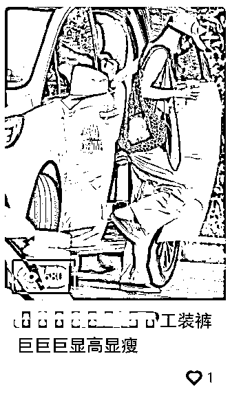
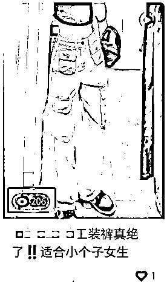
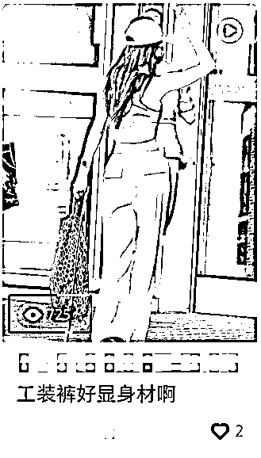
这样我们首先很直观的可以对比的出来哪个封面有潜力，然后在通过笔记阅读数，商品访客，加购，出单等这些数据去决定要不要继续测，可以在后台【数据】→【自营笔记】→【商品笔记】→【笔记分析中】查看测试的笔记数据如何
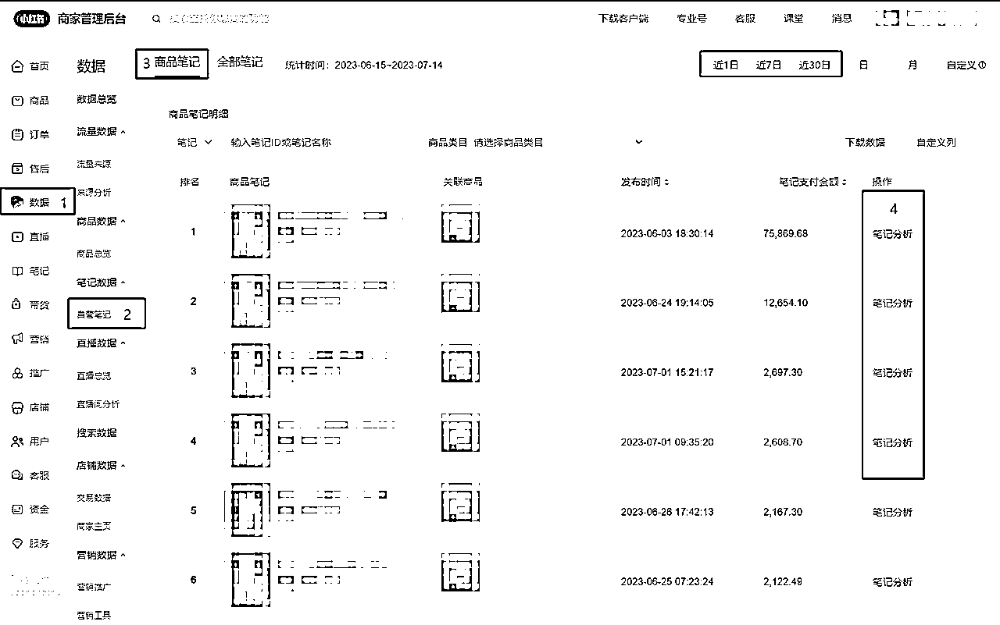
用数据来决定要不要继续测这个品，不要只单看小眼睛，跟着数据走
例如我们前面测了三组不同的封面和三条不同内容的笔记，第二天我们可以点开这个板块来看我们这条笔记的数据，一个产品三条不同的封面和内容，自然他的笔记阅读数、商品访客、加购、这些数据是不同的，三组数据在拉出来进行对比，决定用哪条数据好封面继续测或哪条内容好的继续测
点击【笔记分析】→【趋势分析】
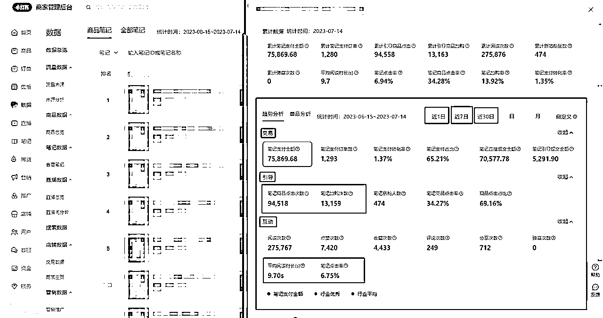
你可能已经测了很多产品和笔记，现在你也可以去查看下数据如何，分析哪个的数据好，决定要不要继续去推，继续推则根据数据去优化即可
重新测了就是拉出最好的那条重新优化觉得不足的点，我们点开【笔记分析】→【趋势分析】，可以看见三个板块的数据，分别是【交易】【引导】【互动】
首先测素材测品阶段【交易】数据可能没有，有则更好，因为我们是三组数据对比
第二【引导】数据，我们主要看笔记商品点击次数和笔记加购件数，就是这篇笔记挂的车的商品访客数据和加购数据，这两项数据要和你测了几篇笔记进行对比，越高测说明这个产品和我们的内容是有让客户想购买的冲动的，只需要继续优化调整我们内容，继续测
第三就是我们这篇商品笔记的【互动】数据，这个点我们主要看阅读次数、平均阅读时长(s)、笔记点击率，同理你测了几篇笔记就把这些数据拉出来进行对比，选择数据好的继续把那篇内容加工发布测试
第一轮测试都没有数据，就要先分析自己内容和封面，最简单的就是看头部的内容进行一个对比，还是模仿调整测试，如果都打磨到你觉得没有打磨空间了，正常测个6-9篇都没有数据那就可以放弃这个产品，因为你同时也在测其他的产品，其他的产品数据跑上来了，精力自然转移放在有数据的内容和产品上
发布了第二天去看这个板块可能没有数据，第一可能没更新，第二就是没数据，所以我们可以起号阶段我们可以以3天为一个标准去进行一轮查看筛选
上一个点讲了发笔记多展现，在通过商品访客，笔记阅读数，加购，等这些数据去制定我们的运营调整方案
测笔记测款阶段你可能会遇到的问题：
1.有小眼睛但没有商品访客
2.笔记阅读数很高，没有商品访客
1.有小眼睛但没有商品访客
在做的可能会遇到一个问题就是我们发的笔记有小眼睛，但商品访客就是上不去，也不知道是什么原因，也不知道怎么调整
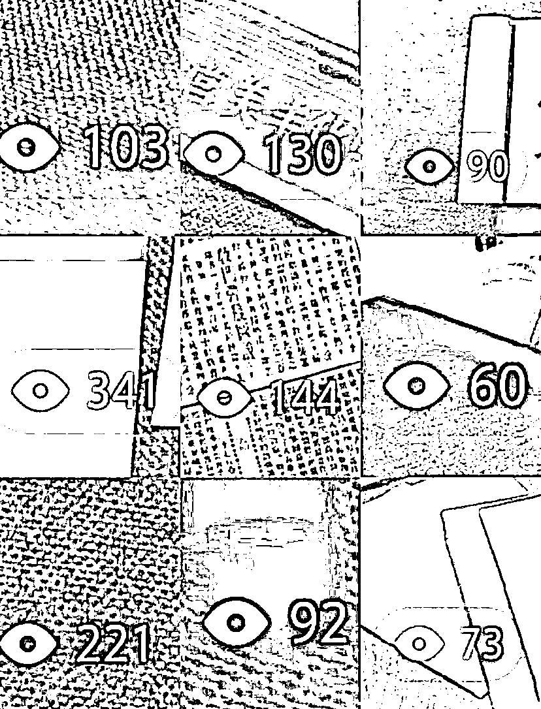
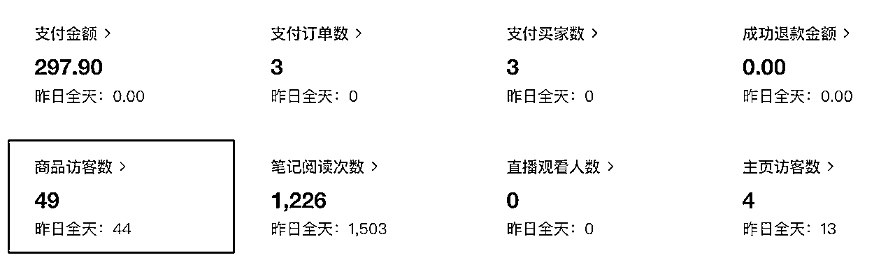
首先讲下用户的下单路径：看内容→点击左下角链接→查看商品→下单 从这个路径能倒推，没有点击商品链接，那就是内容问题，那我们这个时候就要分析我们的内容，用户为什么没点击商品链接，说明我们的内容没有给客户造成购买商品的冲动
前面说过：挂车笔记的流量分发会更精准曝光给有相关购买行为和意向的人群，那我们的内容自然就要做到让客户有购买意向，从内容结构来看，我们是上来卖货的，就明确的提炼我们的卖点结合素材展示出来即可，我称之为强种草内容
这里要换一个思维，前面说了普通笔记会分发给全量的兴趣用户（泛流量）这个点呢导致我们很多的笔记做的就不像带货笔记，就和日常分享的那种感觉差不多，就算给你推荐了精准流量没有转化还是内容没有让客户点击商品链接的欲望
所以从这个逻辑上来说，我们既然是挂车笔记，就把内容围绕为了卖货去做，不要把内容做的像分享日常生活的感觉一样
哪怕这种内容的小眼睛和商品访客不多，但转化是很高的，挂车笔记的流量分发会更精准曝光给有相关购买行为和意向的人群
结合以上的点才能使商品点击率高的内容，并且提高转化率
案例一：
这种内容都有一个共同点，内容结构都是有文本朗读，就是我们前面提到的强种草的感觉，哪怕这个内容小眼睛少，我们也能有商品访客，有商品访客才有概率下单，但下面的这种内容形式哪怕给你1000小眼睛，商品访客也很少，转化率也是很差，可以看以下几个案例
整体的内容，除了标题体现了是在卖货，但整体的内容完全完全没有达到一个让人想点击商品链接下单购买的冲动
案例二：
这种内容爆和出单的概率太低了，属于靠天赏饭吃，但很多人还是这样做内容，靠量，但这样很费劲，两种内容一对比你就有明显的意识到哪个更想让用户下单
这种内容有爆单的，前面说了挂车笔记会分发给有购买意向的兴趣用户（精准流量）我们把内容做的就是在带货，所以没必要做的像分享日常的那种感觉一样（尽可能把内容打磨成案例一那样）
这种内容出数据的概率两者一对比很明显，第一种案例的内容结构就是强种草类型，第二种案例的内容结构就很像纯分享日常的内容，这种流量进来的购买意向非常低，哪怕是精准的流量，刷到还没看完就划走的概率很大
不出单说到底还是内容问题，这个内容拆开来讲逻辑就是那么简单，但很多人还是偏向简单高效，找几张图片一件成片，对带货笔记的内容结构没有一个了解，偏向于制作简单的内容，但都这样想大部分人都在这样做，第一内容转化率低，都这样，购买你的概率也低
总结，笔记有数据但商品商品访客少，本质原因通过案例的拆解很明显就是我们的内容要做到让用户有点击商品链接下单的冲动
2.笔记阅读数很高，没有商品访客
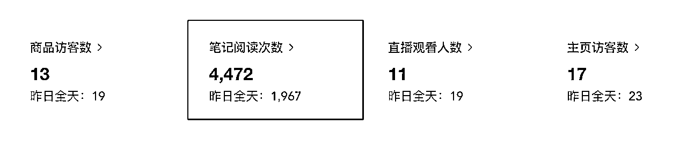
这种情况一般笔记都能拿到不错的数据，说明这个封面是能拿到点击的，但和商品访客的笔记比例太大，很大原因是封面的诱导性太强，想做内衣，内裤，女鞋这种容易吸引来男粉的封面就很容易导致这种情况，除了调整封面没有其他办法了
● 通过前面的案例，这种带货笔记的内容音频＋画面的文字+文本朗读，整个的视频结构都是在种草（这里有个很核心的点，画面加文字，标题文案中加关键词，做好封面，这里搜索流量进来的流量搜索到的概率很高，搜索到你，你的封面好看，标题做了引导，用户点击进来，留下互动价值，或购买就会给你这条笔记推流，相当于搜索流量转化成了推荐流量，再次推荐又有用户留下互动数据或购买，又继续推流）
整个的流程可以看看这张图
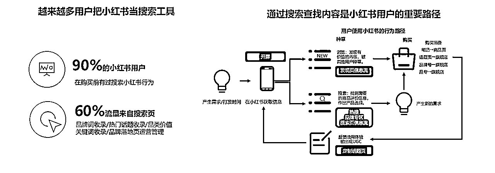
如何在我们的笔记中布局关键词，可以看看这篇 之前操作手册发过
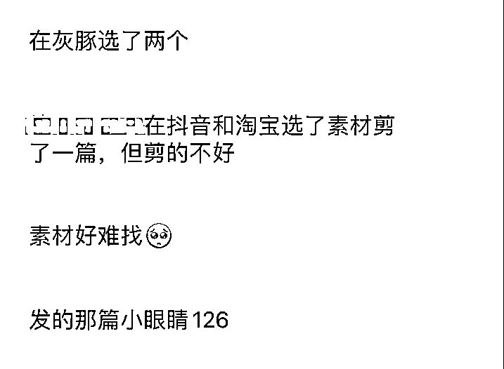
这几个问题，本质就是缺乏某个环节的重复练习，又想快点出结果，数量不够，导致结果也没什么质量，数量就是最重要的质量。在正确方法论支撑下，不仅要看的多，也要做的多，重复，持续的做
综合能力强，重复的次数则少，出数据快，但那也是他日积月累重复练习出来的经验，没有那么扎实的基本功就好好练，调整好心态去做项目，一急都是问题，先思考清楚自己哪个点需要去发力
1、不知道怎么选品和做内容，本质还是对标和案例看的太少，选的太少
2、找不到素材，本质还是去找的太少，拓展的平台太少
3、剪不出好的内容，本质还是剪的太少，案例看的太少，
4、一直没数据，本质还是发的太少，账号太少，或以上几点做到的太少，
仅仅四个点，已经把整个项目的执行层面的底层逻辑拆解开了，每个点都有方法论，有逻辑可循，想都是问题，做才是答案
最大的误区明明是某个环节重复练习数量不够，导致做不出自己理想的质量，错误地以为瓶颈在于项目问题，内卷问题，价格问题，账号问题，网络问题等等等
然后就开始幻想在不增加数量的前提下，用某种奇技淫巧，偷工减料达到目的。这时候玄学，迷信和各种无病呻吟就出现了。
数量不够，底子不够厚时，很多事情是做不到的。即使有时看似有捷径，但因一直缺乏某个环节的重复练习的经验积累，你也很难把握住这个捷径
选品重要，素材剪辑更重要，确定做一个类目，首先要去验证能不能找到这个产品的素材，找到这类产品的素材能否剪辑出有质量的内容
不会选就先跟爆款，什么卖的好卖什么，这个非常简单，核心更多的是内容不是选品，订单都是靠笔记驱动的，大家都跟爆款相当于没有爆款，跟爆款只是为了加快放大出数据的概率，但跟爆款只是这个款存在爆款因素，是当下正在爆的，你去做能不能爆还是取决于你的内容，不管在站外选品还是站内，更重要的是搞定素材，跟爆款很多人都在跟，素材重复度高，剪辑功底差发出去也很容易判定搬运
按照平台属性，真的要赚钱就做女装，我们团队也做了不少产品，但真正有赚到钱的产品还是女装，我们从去年冬装卖到秋装到现在的夏装，退货是高，但没必要怕，小红书做的起利润，利润50%以上的女装都很多，现在入局推荐首选还是女装，首先女装跟爆款出数据很快，但很多人入局做女装，对女装的内容把控又很差，但这个可以练的，多看对标的内容，多找素材，多剪
开始最需要的就是正向反馈，从笔记数据，出单等这些数据来看，女装选出一个爆款，一天几万营业额很轻松，退货率这件事把账算明白，女装按50%退货率来算，哪怕你做20万营业额，退10万，你还有10万营业额，10万营业额会亏钱吗，不会，只是售后多，但利润可平摊售后成本
但我们客单越高，退的就越少，加上售后也少，同时利润高了
主要看你做什么人群，我们做的人群都在25-30这样的女装，不会选择去做学生18-22这个群体的，如果客单很低，吸引来的都是学生这个群体，售后会非常头疼，退货非常高，群体决定了素质和消费水平
不要觉得低价才有人买，不要觉得卖不出去是价格太贵，都是你觉得，但也不是要你非常离谱，例如同行都在卖49.9的裤子，你可以卖69.9、79.9、89.9，完全没有问题，具体看你选品和内容，以及这个产品对应的人群去定价
多看看客单高的对标，100-300的也有销量嘎嘎猛的，做小红书就是做人群，选定你要做的人群，围绕人群去选品，年龄标准切入
我知道，这么说你还是对女装有一定的看法，不过没关系，大把产品可以做，灵活变通，先找自己熟练的去切入，把项目先跑通才是重点，后期在拓展其他类目都可以
首先选品大家无非关心两个问题，利润和售后，给大家两个选品方向
方案一：【利润高，售后多】利润可平摊售后成本，例如：服饰鞋包，客单可以做到100-300元【爆发起来很猛，一天几万营业额很容易】
方案二：【利润薄，售后少】一年四季都可以卖，不用换季，例如：饰品、手机壳、百货、零食、等【爆发相对没有大红海类目女装这种高，但起来后较稳定】
不要选：【利润少，售后多】例如水果，除非有货源，对接果农，基地【笔记很容易拿到流量，价格太高转化会很低】
选择一个产品更多的要考虑素材问题，有一些产品的内容做不出那种感觉，做起来也非常吃力
像服饰箱包这种产品的内容属于【外观大于功能】内容的展现形式要求高，需要突出产品的美感
像百货这种产品，建议做有关女性痛点的，然后符合平台人群的，不要去做什么垃圾袋、扫把、收纳盒，掏耳勺，抹布，这种产品，这种产品客户都首选多多，如果真的要做，可以选择一些新奇特的，例如手持小拖把
百货建议功能性产品，这种产品的利润率可以做的比较高，其次这种属于【功能大于外观】的产品，内容呢不用特别具有美感，做好封面，展示出痛点即可，因为小红书都是女的，女的都很注意自己的体态，例如健身用品，瘦腿神器，颈托，足底矫正器，瘦脸绷带，等
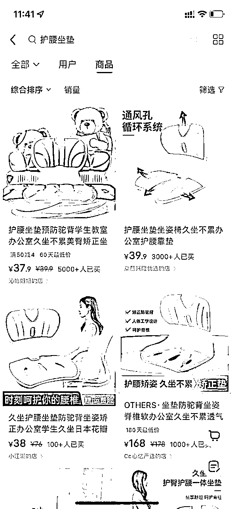
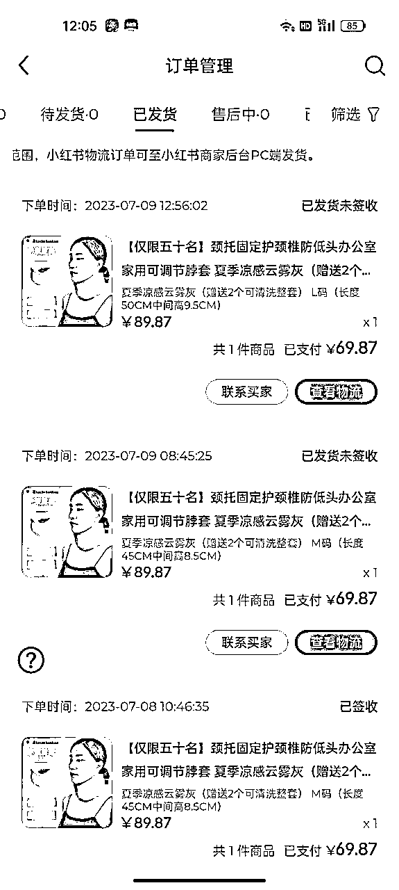
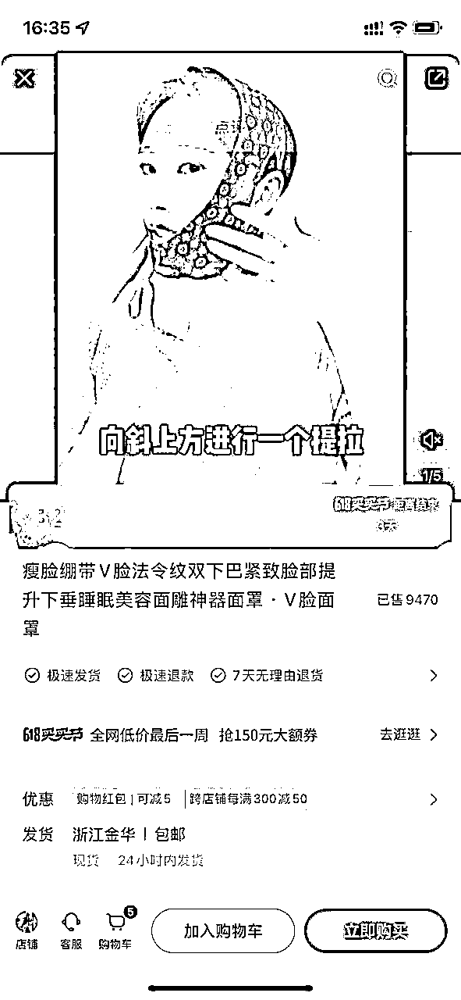
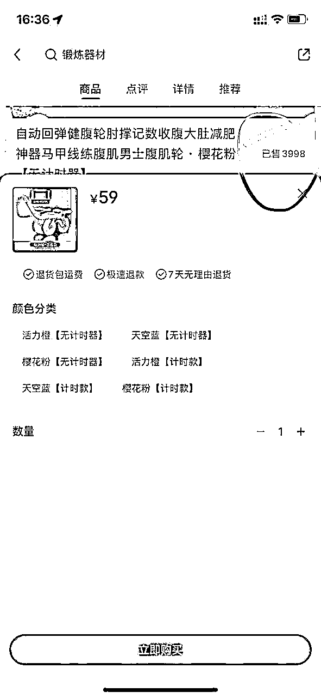
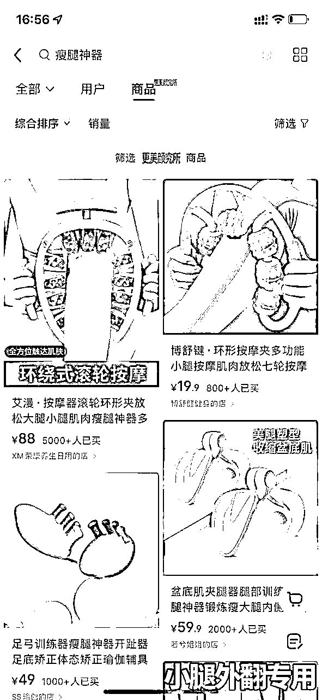
起号阶段广泛点去做，例如做女装的，起号阶段可以女装多品类结合跟站内的爆款，例如裤子、连衣裙、t恤、吊带背心等等同时一起测，哪个拿到数据高，且能出单在来定垂直要做的品类，广泛，我们出数据概率加大，多品类我们也可以快速的跟上每个品类的爆款，如只跟连衣裙单品类去测试，这样太局限，概率也低
如果你会选品，人群以及产品供应链和素材获取有一定的把控能力，可以选择单品打爆玩法+多账号矩阵裂变，也可以先单账号测，拿到数据快速的铺开自己的号，最快的占领这个产品的流量
一个产品一个产品的去推，推到爆，但也要懂得变通，在打单品的时候打底先怼20条笔记，不同封面，不同的标题去测点击率，拿得到点击率的笔记在结合前面讲的，看哪个产品有访客，加购，等关键数据去调整内容，封面等
1、女装怎样的就算低粉爆款？比如别人已经爆一个月了，她粉丝量也是一万上下，这种能不能跟？
答：这种不算低粉爆文，低粉爆文最少都是1000粉以下，低粉爆文不挂车万粉以下，这种很多人问在哪买的，这个品直接跟（低粉爆文首选不挂车的）
2、比如一个款你发现有好几个帐号都在做了，那是说明这是爆款，还是说明这款竞争已经很激烈了，不要跟了？
答：跟呀，那么多人都做说明受众群体多呀，跟才有概率（跟款：需要结合，例如不挂车的那种爆文笔记，在或者在带货的爆款产品，同时进行，不冲突）
3、测品怎么测？比如找了十个款，一天测五个，两天测完一圈，看数据，好的接着继续再测一轮，不好的淘汰换新的？
答：3-5个差不多，不同封面，不同标题，内容改改，例如其中一篇有文本朗读，一篇没有但内容有文字，一篇什么都没有，不同音乐（总结一个素材多种形式，利用到极致，不同封面是为了看不同点击率，就是小眼睛，看哪个高，继续围绕那个高数据的素材去裂变笔记，在变着花样测3条）
测几轮具体还要看数据，小眼睛，商品访客，加购这些，数据标准当然越高越好，可以定为3轮，数据拉胯甚至也没数据那直接换
你这个期间也还在测新的，数据都要看，可能a产品还没到第二轮，但之前发的c产品突然有数据，那你就集中c产品继续裂变笔记
4、月初发的一条笔记 当时也就200左右小眼睛 后来再看的时候就500了，我觉得200-500这个过程得益于文案里的关键词 小红书有搜索流量”，意思是爆款笔记是一个月之后爆发，然后带来大量订单？
答：标题文案话题都有布局关键词，搜索流量是因为有人搜这些词，然后他封面也好看，用户搜索了，看到他点击了他然后看了笔记觉得可以然后留下了互动数据，有了互动数据就有推荐流量，推荐流量进入下一个流量池，数据反馈也不错，就继续推流，同时裂变了很多条笔记，推流的流量带动其他笔记，源源不断
（核心点就是现在的笔记没什么流量，做好关键词布局，做好封面，搜索流量进来，有机会转化推荐流量）
5、有一个账号用的是很久之前注册的老账号，发过几篇内容，后来都删了，现在发笔记流量非常少，是不是账号的问题?
答：如果粉丝很少，没什么价值，直接注销重新注册不要浪费时间，如果要拉回来，最少要15天时间，还要有优质的内容持续输出
6、已经开通店铺的账号可以转型做其他类目吗?会不会影响流量?
答：一个店铺可以做很多类目，个体有经营范围即可，转的话要看你之前做的什么，人群是否匹配度高，不然转了需要一段时间拉流量
7、店铺需要实名认证，如果要注册大量店铺该怎么解决?
答：可以用营业执照开账号，关联账号，关联的小号实名160一个
8、商品违规，笔记违规次数多有影响吗
答：商品违规影响不大，修改即可，违规多了对账号影响很大，权重降低，不收录，不推流
9、是视频笔记好还是图文好?一个账号可以视频图文混着发吗?
答：看产品展现形式，例如水果零食类的可以图文，功能大于外观的建议视频，外观大于功能的可以图文，可以混着发，但我们是做搬运，自己发图片容易判定搬运，除非是新图，视频的原创度高
10、有没有什么可以快速给视频去重的软件?
答：有，但要达到非常优质的视频效果还没那么强大，还是要人工精细剪
11、目前选择女士睡衣为产品对标同行大多数价格都在30都50之间在其他平台搜索了一下利润不到一
倍。朋友建议再加一倍卖。不要在这个价格区间卷。
答：不要因为价格阻碍了你去做这个产品，价格越低对应的人群就越小，退货率高售后多利润少，先按 1倍价格去做，先开始，内容拿到数据在来看商品访客，商品点击，转化率，在来调整是否要降价或找更低价的供应商，先搞流量
12、用至尊宝下载素材拼多多权限不够指导的方法自己也尝试了依旧不行
答：不用纠结，拼多多素材质量很烂，多平台拓展，抖音大把素材，直播间录屏获取素材在混剪也是一个方式
13、每天一个小红书账号交易每天发多少条?精细化运营更好还是用数量来博概率更好?对标同行有人一
天发20条也有人一条发一条但是数据反馈都不错。朋友建议一天发100条
答：正常 5-8 条，当然是精细化剪辑，100 条还不如好好剪 10条，你可以慢慢加上这个量，订单都是靠笔
记驱动，你内容不好怎么出单，1000条都不会出单，但做好内容找素材剪辑素材上要下功夫，先拿到流量，先
做好一条内容先，根据情况去增加
16、抖音直播间切片建不建议做?抖音的品有时候在其他平台是找不到的。暂时不清楚怎么上抖音的品。
答：建议，因为素材原创度高，你可以直播间素材结合小红书视频结合抖音视频结合淘宝视频，多一个素材的拓
展渠道，找不到就不要纠结，找找的到的，抖音的产品你要上在小红书，路径是截图去找到上家，上家链接复
制在上品软件上，然后去找这个产品的素材剪辑成作品发布挂上链接
17、笔记爆不出单或者就出几单!这个账号是玩具类目，爆了3个视频都是这种情况。
答：玩具的转化率是比较低的 因为内容娱乐性质很强，没有出单大部分原因是用户图一乐就看了，调整产品，建议做益智类玩具
18、当找到一个几百流量就出个几单的产品时，该如何操作。(这种品找到后，我发了这个品的其他视频，流量不是很好。但是发之前的原视频流量还可以，所以就直接换个滤镜直接发原视频，但是这个会提示违规)
答：测 第一测素材 素材分为封面和内容一个产品我们会做3个笔记 不同的封面和标题去测拿到的数据是不同的 这第一个数据跑的好 且有商品访客，加购等 那可以继续围绕这个有数据的去裂变笔记。
答：还是去重手法的问题 混剪+去重一般是能过的
答：如直接搬 你是第一个发在小红书那你就是原创 但这个没有办法判断，课程有个卡时间差找素材的，你可以看看，但还是有风险，所以两者结合，卡时间差找素材，然后混剪
19、现在就是出单很容易做到，一般出个几单的情况比较多。但是就是没有爆过单，我做的是百货类目，是类目原因还是找到好品之后，操作方法不对?
答：没有爆单第一是品 跟爆款产品+爆款的素材 这两者爆的概率就有50%了，放大概率性，不同封面和内容去测，赛马 看哪条数据好 裂变笔记 就是围绕那条数据好的重复剪素材剪到极致
抖音+抖音+小红书+淘宝+.…...混剪公式，之前分享的操作手册里有讲到过
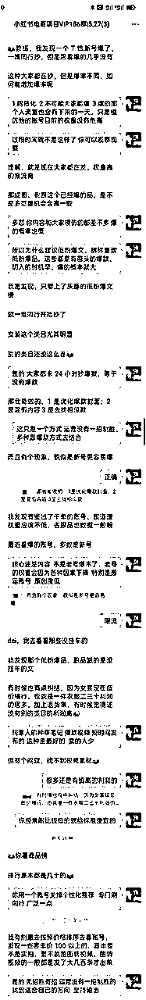
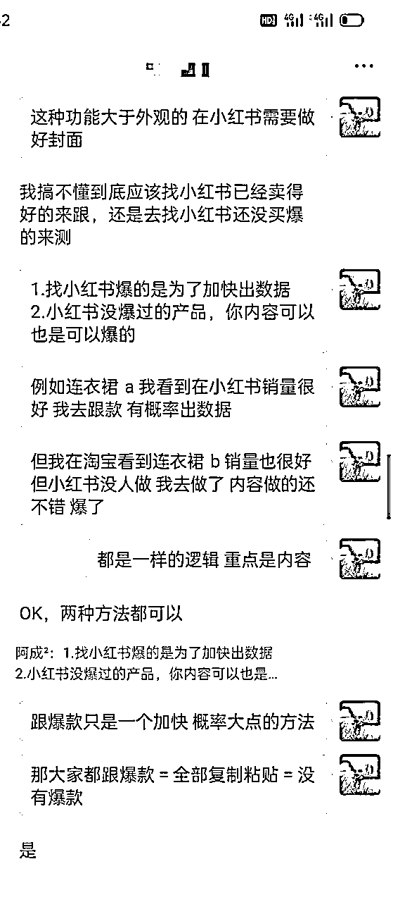
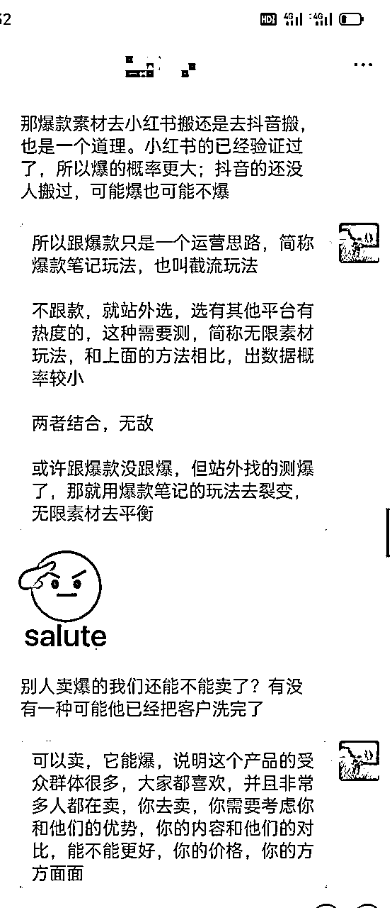
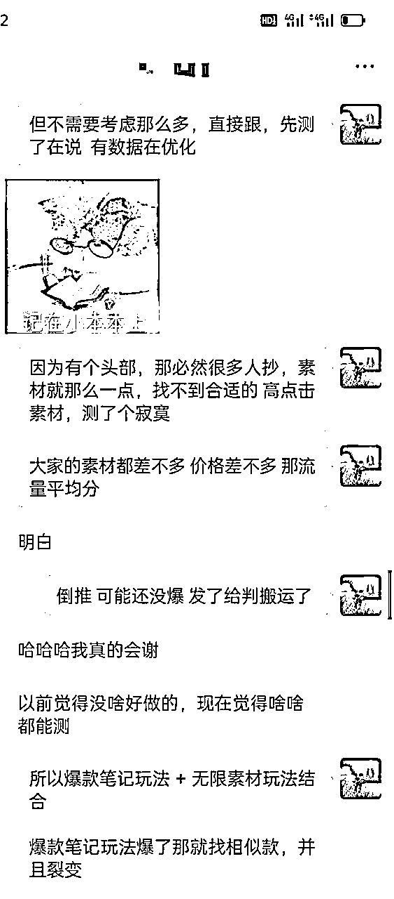
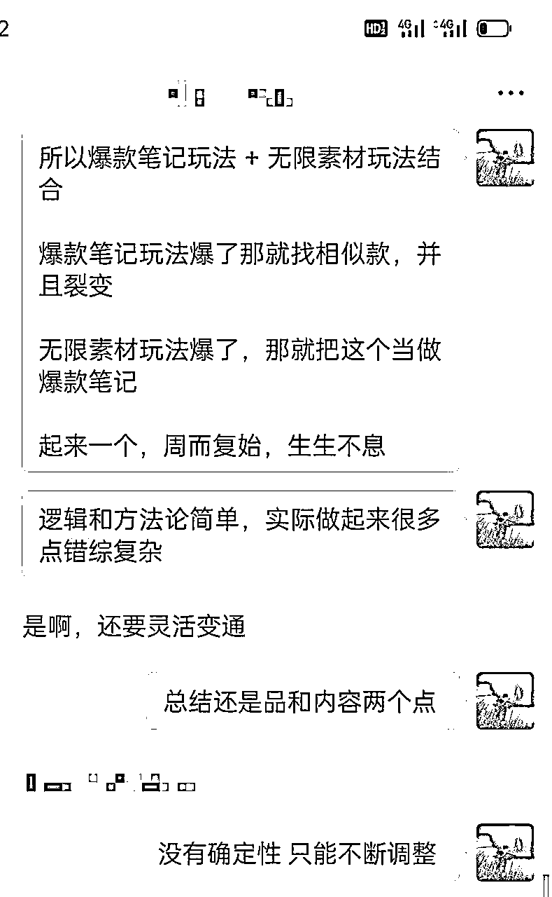
还有很多写不完，自营团队很忙，没什么时间写，也不想发太碎片的内容，有时间在整理做分享，本篇有问题可留言，希望对你有帮助，祝你爆单